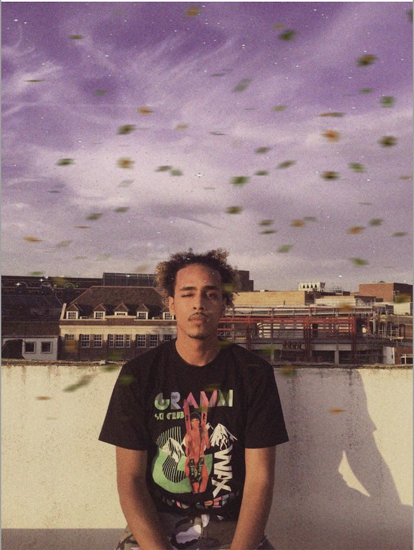
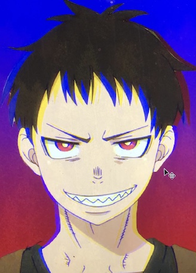

Kreatives
Habe schon sehr viele Sachen ausprobiert, bin eine der typischen Personen die vieles kann aber nichts richtig.
Nun ein paar Beispiele
 Diese Bilder sind entstanden als ich Photoshop ausprobiert habe.
Hier habe ich, als ich in England gelebt habe, für ein Start-up gemodelt.
Bei diesem Video wurde ich zufällig fürs Schweizer Fernsehen Interviewed.
Habe auch mal, zum Spaß einen Song geschrieben und aufgenommen. Ich entschuldige mich für die Schimpfwörter.
Mein traum ist es den Mount Fuji zu erklimmen.